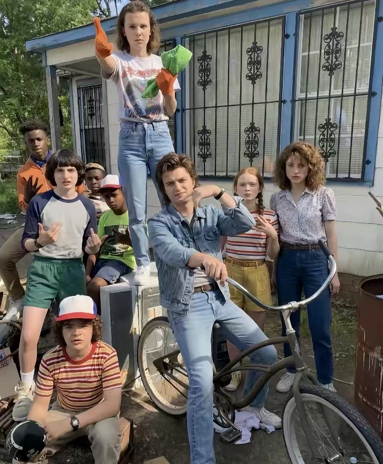
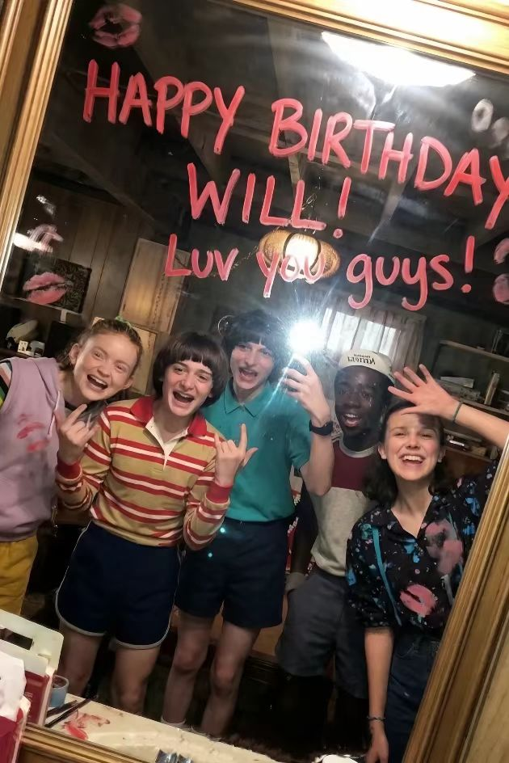
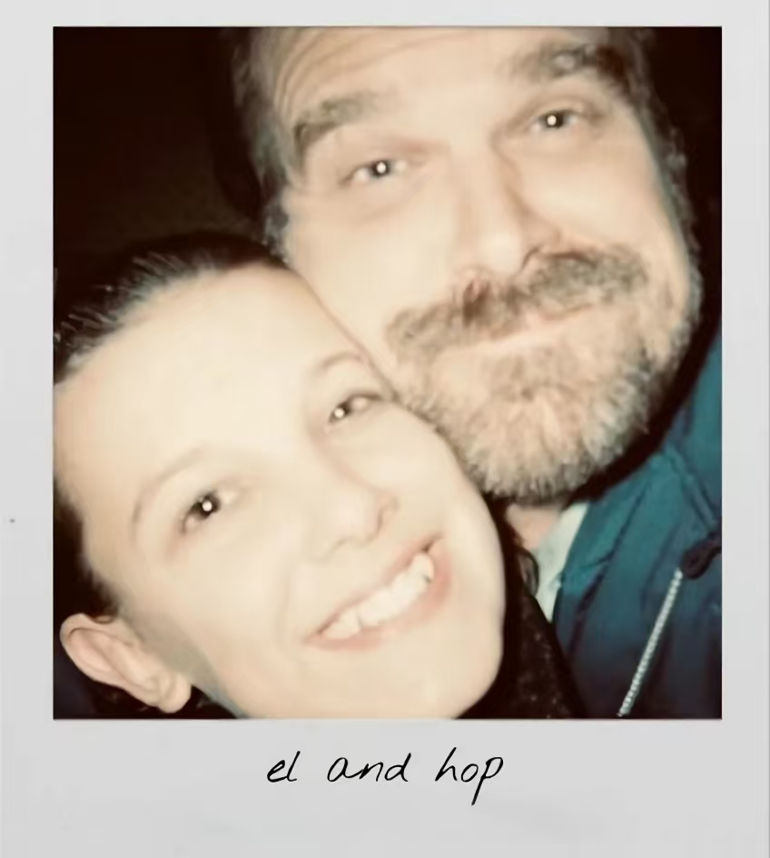
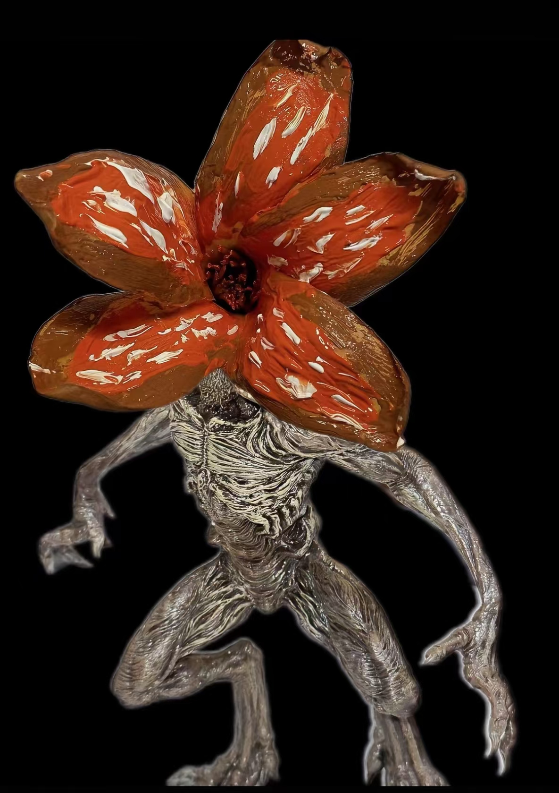

SUBJECT PROFILENO. 011
VOYAGER
- NAME
- Voyager
- ROLE
- 日常记录者 / 创作者
- BASE
- 在自己的频道里
- STATUS
- ONLINE
“好奇心不是弱点，它是通向另一个世界的裂缝。”

PERSONAL ARCHIVE / HAWKINS FREQUENCY
SUBJECT FILE 001 · 1983—NOW
我把日常里的光、朋友的笑声和偶尔失真的瞬间收集起来，做成一个可以慢慢浏览的个人档案。
CLASSIFIED DOSSIER
“好奇心不是弱点，它是通向另一个世界的裂缝。”
我喜欢把平凡的一天，整理成值得再次打开的东西。
这里是我的个人空间：记录正在发生的事，保存和重要的人一起度过的片段，也放一些我正在制作的实验。它不追求完美，只想让每一次回来看见的自己，都比上一次更清楚。
页面里的照片来自我的日常档案；下方的镭射工坊，则是把这些瞬间做成可以旋转、翻面和折射光线的收藏物。
EVERYDAY TRANSMISSIONS
有些记忆没有大事件，只是某一天的光线刚好落在了正确的位置。



正在收集新的照片、声音和故事。下一次信号会在这里出现。
● RECORDINGFIELD NOTES
生活不是一条直线，更像一盘偶尔会闪一下的录像带。
持续记录照片、朋友和正在发生的微小变化。
让文字、影像、动画和交互共同讲一个故事。
但它会从一次散步、一张照片，或者一个奇怪的想法开始。
RuiC CARD ARCHIVE / BLENDER + THREE.JS
每一张照片对应一张独立的 3D 全息卡。拖动卡片、翻到背面，或者观察卡片边框的 26 个字母灯：它们先随机闪烁，之后进入 R → U → N 的规律节奏。